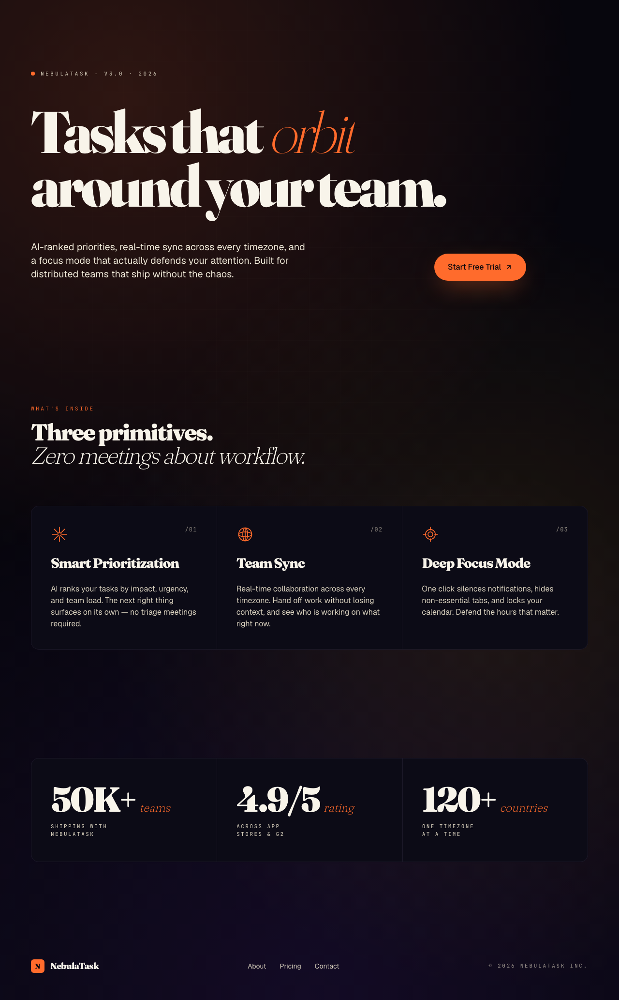
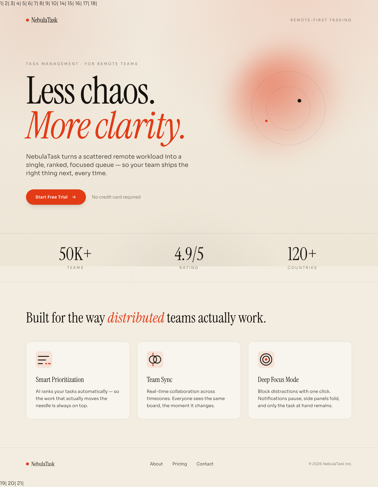
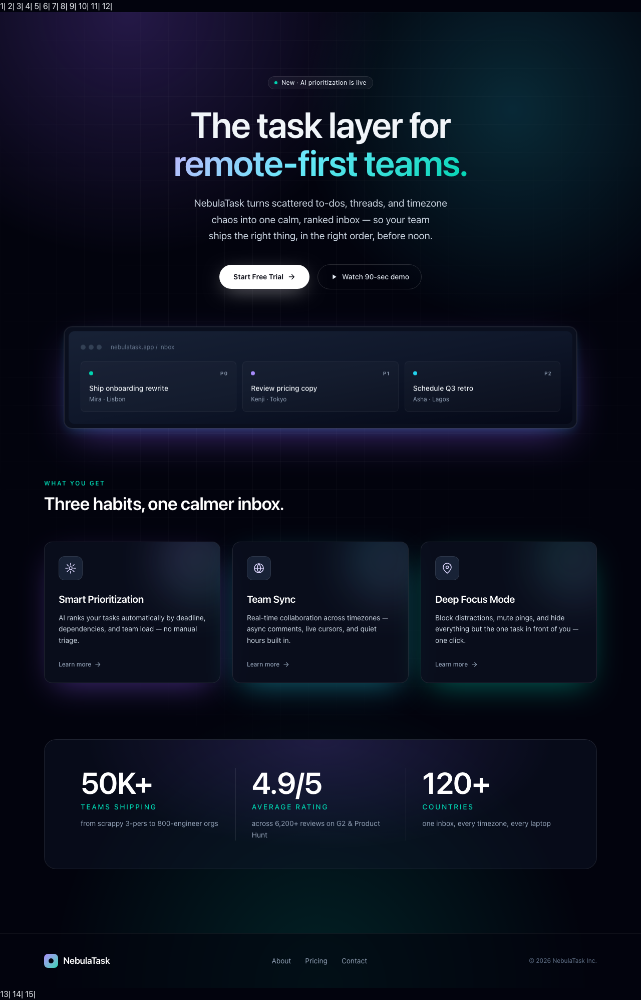
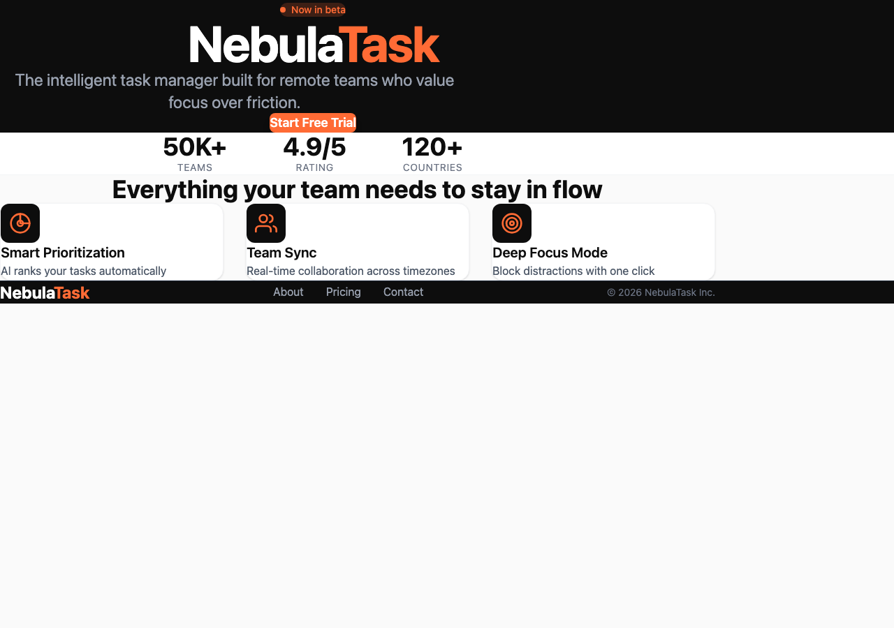

Same prompt, same model (MiniMax-M3), same provider. Each CLI ran non-interactively in its own sandbox.




}, ), </html> as filenames). Missing: index.html, main.tsx, index.css, tailwind.config.js.--edit-format whole didn't help — the model still produced malformed output after 3 reflections.kilo run command in headless mode loads zero tools ("Available tools: ."). The model receives no file/bash/write tools, so it cannot create files. Tested with:minimax/MiniMax-M3 via MiniMax API: model emits tool-call JSON as text, CLI doesn't executeollama-cloud/minimax-m3: same — Ollama Cloud doesn't support function callingollama-cloud/kimi-k2.7-code: same — "Available tools: ." (empty)--pure: disables all tools--auto, --dangerously-skip-permissions: no effect--agent ask: agent loads but tools still emptykilo run (non-interactive mode) has a bug where it doesn't register tools with the model. The TUI mode works (tools load in interactive sessions), but headless/pipeline mode is broken in v7.4.7.
GEMINI_API_KEY or Google auth). No support for custom OpenAI-compatible or Anthropic-compatible endpoints. Cannot participate in a fair same-model benchmark.Pi — Fastest. Clean component architecture. Warm dark + amber. Good tool calling support with MiniMax.
Claude Code — Most design-forward. Layered gradients, noise, asymmetric grid, animations. Slowest but most polished. Follows design system rules.
Codex CLI — Solid output. Clean build. More conventional design. Created in subdirectory.
OpenCode — Fastest with clean build. Brutalist-influenced. Cream + coral. Good MiniMax integration.
Aider — Failed. MiniMax-M3 doesn't conform to Aider's edit format. Created partial files with corrupted names. Not viable for multi-file generation with this model.
Kilo Code — Failed. kilo run headless mode doesn't load tools. CLI bug in v7.4.7. Works in TUI mode but not in pipeline/automation.
Gemini CLI — Incompatible. Only supports Google models, cannot use MiniMax-M3.